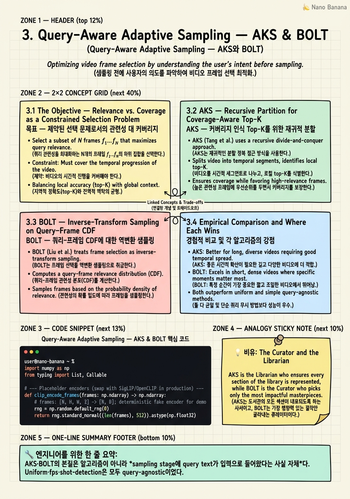

Query-Aware Adaptive Sampling — AKS & BOLT

🎯 학습 목표
- Query-aware keyframe selection을 relevance/coverage joint objective로 정식화할 수 있다
- AKS의 recursive partition 알고리즘을 의사코드 수준으로 재현할 수 있다
- BOLT의 inverse-transform sampling이 왜 stochastic diversity를 유지하면서 high-relevance 구간으로 mass를 쏠리게 하는지 설명할 수 있다
- Training-free sampler가 frozen VLM·frozen encoder 환경에서 plug-and-play로 동작하는 인터페이스적 이유를 댈 수 있다
- AKS·BOLT가 underperform하는 조건(짧은 클립, ambiguous query, query-irrelevant benchmark)을 식별할 수 있다
Chapter 2에서 본 uniform·fps·shot-detection baseline은 긴 비디오에서 두 가지 방식으로 무너졌다 — 정보 손실이 query와 무관하게 일어나거나, 반대로 query와 무관한 redundancy를 그대로 LLM에 떠넘기거나. 이 chapter는 2025년 CVPR에서 동시에 등장한 두 plug-and-play training-free sampler, AKS(Adaptive Keyframe Sampling, Tang et al., arXiv:2502.21271)와 BOLT(Liu et al., arXiv:2503.21483)를 다룬다. 두 방법은 같은 문제 — *질문 텍스트가 있을 때 어느 frame을 LLM의 context에 통과시킬 것인가* — 를 서로 다른 수학적 어법으로 푼다. AKS는 이를 constrained discrete optimization으로, BOLT는 importance-weighted stochastic sampling으로 정식화한다. 둘 다 frozen CLIP encoder만 호출하고, downstream VLM에는 손대지 않으며, 64–768 frame budget이 아니라 8–16 frame budget 안에서도 작동한다는 점에서 production-friendly한 첫 세대 query-aware sampler다. 이 chapter의 목표는 (a) 두 방법을 정식화하고, (b) AKS recursive partition을 직접 Python으로 구현해 보며, (c) 어떤 조건에서 둘이 uniform에 진다는 사실까지 솔직하게 정리하는 것이다.
핵심 내용
3.1 The Objective — Relevance vs. Coverage as a Constrained Selection Problem
비디오를 N개의 frame f_1, ..., f_N, 질문을 텍스트 q라고 하자. Sampler의 임무는 부분집합 S ⊆ {1, ..., N}을 고르는 것인데, 제약은 |S| = K로 LLM의 vision context 한계가 강제한다. 두 가지 효용을 동시에 키워야 한다. 첫째 relevance R(S; q) = Σ_{i ∈ S} sim(φ_v(f_i), φ_t(q)) — frozen CLIP/SigLIP encoder가 주는 query-frame cosine similarity의 총합. 둘째 coverage C(S) = spread({t_i : i ∈ S}) — 선택된 frame들의 timestamp가 비디오 전체를 얼마나 고르게 덮는가. AKS는 이를 명시적으로 max_{|S|=K} R(S; q) + λ · C(S) 형태의 joint objective로 푼다. λ → 0 극단은 top-K CLIP score 그대로 (지난 chapter의 anti-pattern: 한 장면에 score가 몰리면 8 frame 전부 같은 2초 구간에서 뽑힘), λ → ∞ 극단은 uniform sampling. 이 트레이드오프가 chapter 전체를 관통하는 축이다. BOLT는 같은 문제를 결정적(greedy)으로 풀지 않고, frame별 relevance score를 PDF로 해석한 뒤 inverse-transform sampling으로 stochastic하게 뽑는다 — 동일한 트레이드오프를 확률 분포 차원에서 표현하는 방식이다. 두 정식화의 공통점은 *질문 텍스트가 sampling 단계 안으로 들어왔다는 것*이고, 차이점은 *결정성 대 확률성, 명시적 partition 대 묵시적 CDF reweighting*이다.
3.2 AKS — Recursive Partition for Coverage-Aware Top-K
AKS(Tang et al., CVPR 2025, arXiv:2502.21271, repo: github.com/ncTimTang/AKS)의 핵심 아이디어는 단순하다. 비디오를 시간축 위에서 recursive하게 절반으로 자르고, 각 절반에 frame budget을 분배한 뒤, *그 절반 안에서만* CLIP relevance score 기준 top-1을 뽑는다. 알고리즘은 세 단계다. (1) CLIP relevance scoring: 전체 N개 frame을 frozen CLIP visual encoder로 임베딩하고, query q의 text embedding과 cosine similarity를 계산해 score vector s ∈ R^N을 얻는다. (2) Recursive partition: 함수 AKS(s[l:r], k)가 들어오면 — k=1이면 구간 [l, r)에서 score 최댓값 인덱스 하나만 반환하고, k>1이면 구간을 중간점 m에서 둘로 자른 뒤 budget을 절반씩(⌊k/2⌋, ⌈k/2⌉) 나눠 양쪽 재귀호출 결과를 union한다. (3) Adaptive top-up: 원논문은 또한 한 partition 안에서 score가 *너무 균일*(모두 낮거나 모두 비슷)할 때 그 partition을 더 쪼개지 않고 그 자리 uniform으로 대체하는 가벼운 fallback을 둔다 — 이는 'ambiguous query'에서 AKS가 uniform으로 우아하게 degrade되도록 만든다. 결과적으로 selected frame들은 시간축 위에서 (a) 비디오 전체를 덮으면서 (b) 각 구간 내부에서는 query 관련도가 가장 높은 frame을 고르는 *Pareto-front 근사*가 된다. 가장 인상적인 empirical 결과는 LLaVA-Video-7B + AKS가 LLaVA-Video-72B + uniform baseline을 LongVideoBench와 Video-MME long split에서 상회한다는 점이다 — 즉 *10× 작은 모델이 더 똑똑한 sampler 하나로 더 큰 모델을 이긴다*. Production 함의는 명확하다: VLM size를 키우기 전에 sampler를 query-aware로 바꿔라.
3.3 BOLT — Inverse-Transform Sampling on Query–Frame CDF
BOLT(Liu et al., CVPR 2025, arXiv:2503.21483, repo: github.com/sming256/BOLT)는 AKS와 정반대의 mental model에서 출발한다. AKS가 'partition 안 결정적 argmax'라면 BOLT는 'relevance가 만든 분포에서의 확률적 뽑기'다. 절차는 다음과 같다. (1) frozen CLIP/SigLIP으로 모든 frame의 query alignment score s_i를 구한다. (2) 이를 양수화·정규화해 frame-level PDF p_i = softmax(s_i / τ)로 만든다 — 여기서 temperature τ가 chapter 3.1의 λ 역할을 한다 (τ → 0이면 결정적 top-K, τ → ∞이면 uniform). (3) PDF를 누적합해 CDF F_i = Σ_{j ≤ i} p_j를 만들고, u ∼ Uniform(0,1) K번을 뽑은 뒤 각 u에 대해 i* = min{i : F_i ≥ u}를 찾는다 — 표준 inverse-transform sampling이다. 이 한 줄짜리 트릭이 BOLT의 전부지만, 의미는 깊다. CDF가 high-relevance 구간에서 가파르게 올라가므로 sampling mass가 자연스럽게 그쪽으로 쏠리되, *모든 frame이 0이 아닌 확률을 갖기 때문에* 시간축의 전역 coverage가 확률적으로 유지된다. AKS의 recursive partition이 'coverage를 hard constraint으로' 강제했다면, BOLT는 'coverage를 stochastic regularizer로' 녹였다. 보고된 숫자는 결정적이다: 8-frame budget에서 Video-MME가 53.8→56.1, MLVU가 58.9→63.4 — uniform 대비 같은 비용으로 +2.3, +4.5 포인트를 그냥 얻는다. BOLT의 또 다른 장점은 *stochastic*이라는 점 자체다. 같은 query에 다른 sample을 뽑아 ensemble하면 추가 정확도를 살 수 있다 — AKS는 결정적이라 이 trick이 안 먹힌다.
3.4 Empirical Comparison and Where Each Wins
두 sampler의 보고된 wins를 한 표로 요약한다. AKS: downstream VLM을 LLaVA-Video-7B로 고정하고 sampler만 uniform→AKS로 바꿨을 때 LongVideoBench/Video-MME long split에서 LLaVA-Video-72B+uniform을 상회 — 7B 모델이 72B를 이긴다는 것은 *sampling이 model scale의 일부를 대체 가능*하다는 강한 진술이다. BOLT: LLaVA-OneVision/LLaVA-Video 위에서 8-frame budget만으로 Video-MME 53.8→56.1(+2.3), MLVU 58.9→63.4(+4.5). 두 paper 모두 frame budget이 늘어날수록 uniform과의 격차가 *줄어든다*는 점은 솔직하게 보고한다 — 64 frame을 다 쓸 수 있다면 더 똑똑한 sampler의 marginal return은 작다. 그래서 두 방법의 진짜 자리는 *frame budget이 빡빡한* 환경이다: 모바일 inference, edge VLM, 또는 비디오 길이가 한 시간이라 8-frame 안에 모든 evidence를 우겨넣어야 하는 long-video setting. 반대로 *짧은 클립*(30초 미만)이나 *ambiguous query*('describe this video' 류)에서는 두 방법 모두 uniform과 통계적으로 무차별해지거나 미세하게 진다. AKS는 partition fallback 덕에 ambiguous query에 좀 더 우아하게 degrade되고, BOLT는 stochastic ensemble로 variance를 흡수할 수 있다는 부차적 차이가 있다.
3.5 Why Training-Free Wins for Plug-and-Play
두 방법이 2025년에 동시에 SOTA를 깬 *진짜* 이유는 알고리즘적 우아함이 아니라 인터페이스적 결정이다. 둘 다 downstream VLM, vision encoder, text encoder 어느 것도 fine-tuning하지 않는다. Chapter 9에서 정식화할 Sampler.select(video, query, K) -> indices 계약 안에 깔끔하게 들어맞고, frozen LLaVA-Video, frozen Qwen2.5-VL, frozen InternVL3 어느 것 위에서도 동일하게 동작한다. Production 함의는 세 가지다. 첫째, deployment cost가 0이다 — model weight를 새로 분배하지 않고, kv-cache 호환성도 안 깨지고, vLLM-Omni 같은 disaggregated serving graph에서 sampler stage만 갈아끼우면 된다. 둘째, encoder 재사용이 자연스럽다 — Twelve Labs Embed API나 자체 SigLIP cache로 frame embedding을 미리 만들어 뒀다면, sampler는 그 cache 위에서 cosine score만 계산하면 끝이다. 비디오 1회 디코드·임베드 비용을 query 수에 amortize할 수 있다. 셋째, A/B test 비용이 싸다 — 같은 frozen VLM에 AKS와 BOLT를 동시에 붙여 traffic split만 나누면 그대로 비교 가능하다. Chapter 4의 learned sampler들(Frame-Voyager, M-LLM Frame Selection, GenS)은 더 높은 ceiling을 보여주지만, 그 대가로 별도 학습 데이터·별도 model weight·별도 serving lane을 요구한다. AKS·BOLT가 'first deploy, then learn'의 첫 번째 단계인 이유다.
💡 비유로 이해하기
같은 도서관 1만 권 장서에서 *방문객의 질문에 대답할* 8권을 골라 전시 테이블에 올린다고 상상해 보자. AKS는 큐레이터(curator)다. 큐레이터는 서가를 분야별로 절반씩 자른다 — 인문/자연, 다시 인문은 문학/철학, 자연은 물리/생물… 각 칸에서 *방문객 질문에 가장 가까운 책 한 권*만 뽑는다. 결과 테이블은 '내용 적합성'과 '전시 균형(coverage)' 두 축 모두를 만족한다. 결정적이고, 재현 가능하고, 같은 질문에 같은 8권이 나온다. BOLT는 사서(librarian)가 진행하는 가중 추첨(weighted lottery)이다. 사서는 모든 책에 질문 관련도 점수를 매겨 추첨함에 표를 그 점수만큼 더 많이 넣는다. 점수가 높은 책일수록 뽑힐 확률이 높지만, 0점인 책도 (작게) 들어가 있다. 8번 추첨하면 평균적으로 high-relevance 책이 다수지만, 매번 약간 다른 조합이 나온다 — 그래서 같은 질문에 두 번 추첨하면 *앙상블*이 된다. 두 방식 모두 '도서관 자체를 다시 짓지 않는다'는 점이 핵심이다. 책(frozen VLM), 분류표(frozen encoder), 서가 배치(serving infra)는 그대로 두고, *고르는 사람만* 바꾼다.
💻 코드 예시
단순화한 AKS-style sampler를 처음부터 짜 본다. CLIP encoder는 placeholder로 두고, recursive partition 로직 자체에 집중한다. 실제 production에서는 clip_encode를 SigLIP 또는 OpenCLIP 호출로 바꾸고, frame embedding은 캐시에서 읽는다.
import numpy as np
from typing import List, Callable
# --- Placeholder encoders (swap with SigLIP/OpenCLIP in production) ---
def clip_encode_frames(frames: np.ndarray) -> np.ndarray:
# frames: [N, H, W, 3] -> [N, D]; deterministic fake encoder for demo
rng = np.random.default_rng(0)
return rng.standard_normal((len(frames), 512)).astype(np.float32)
def clip_encode_text(query: str) -> np.ndarray:
rng = np.random.default_rng(abs(hash(query)) % (2**32))
return rng.standard_normal(512).astype(np.float32)
def cosine(a: np.ndarray, b: np.ndarray) -> np.ndarray:
a = a / (np.linalg.norm(a, axis=-1, keepdims=True) + 1e-8)
b = b / (np.linalg.norm(b) + 1e-8)
return a @ b # [N]
# --- AKS recursive partition core ---
def aks_partition(scores: np.ndarray, lo: int, hi: int, k: int,
uniform_fallback_std: float = 1e-3) -> List[int]:
"""Select k indices from scores[lo:hi] balancing relevance and coverage."""
span = scores[lo:hi]
if k <= 0 or len(span) == 0:
return []
# Fallback: if the partition is too flat, query is uninformative here.
if span.std() < uniform_fallback_std or k >= len(span):
step = max(len(span) // max(k, 1), 1)
return [lo + i * step for i in range(k) if lo + i * step < hi]
if k == 1:
return [lo + int(np.argmax(span))]
mid = lo + len(span) // 2
left_k, right_k = k // 2, k - k // 2
return (aks_partition(scores, lo, mid, left_k, uniform_fallback_std)
+ aks_partition(scores, mid, hi, right_k, uniform_fallback_std))
def aks_select(frames: np.ndarray, query: str, k: int = 8) -> List[int]:
frame_emb = clip_encode_frames(frames) # [N, D]
query_emb = clip_encode_text(query) # [D]
scores = cosine(frame_emb, query_emb) # [N]
idx = aks_partition(scores, 0, len(scores), k)
return sorted(idx)
if __name__ == "__main__":
fake_video = np.zeros((200, 224, 224, 3), dtype=np.uint8)
picked = aks_select(fake_video, "person opens a red door", k=8)
print("selected frame indices:", picked)clip_encode_frames와 clip_encode_text는 production에서 SigLIP/OpenCLIP 호출로 1:1 교체된다 — 인터페이스가 동일하므로 함수 본문만 바꾸면 된다. 핵심은 aks_partition이다. 재귀 함수는 (a) k=1이면 구간 내 argmax 한 점만 돌려주고(=relevance 우선), (b) k>1이면 구간을 시간축 중간에서 둘로 잘라 budget을 절반씩 나눠 양쪽을 호출한 뒤 합친다(=coverage 강제). uniform_fallback_std는 본문 3.2에서 언급한 ambiguous-query fallback이다 — partition 안 score 분산이 너무 낮으면 query가 그 구간을 구별하지 못한다는 신호이므로 그냥 uniform으로 떨어진다. aks_select는 chapter 9에서 정식화할 Sampler.select 계약과 동일한 시그니처를 따른다 — 같은 인터페이스로 BOLT를 짠다면 마지막 두 줄을 np.searchsorted(np.cumsum(softmax(scores/tau)), np.random.rand(k))로 바꾸면 끝이다.
🏭 현업에서의 평가
✅ 시니어가 보는 것
- AKS·BOLT 둘 다 'CLIP score 위에서 무엇을 더 한다'까지 한 문장으로 압축할 수 있는가
- Frame budget이 *작을 때* SOTA gap이 커지고 *클 때* 좁아진다는 사실을 알고 있는가
- Frozen VLM 위에 sampler만 갈아끼울 수 있는 이유(인터페이스 계약, encoder 재사용, kv-cache 무관)를 production 언어로 말할 수 있는가
- Stochastic sampler(BOLT)와 deterministic sampler(AKS)의 ensemble/재현성 trade-off를 인지하는가
- Ambiguous query·짧은 클립에서는 uniform이 안 진다는 점을 'paper 광고'와 분리해 말할 수 있는가
- Frame embedding을 Twelve Labs Embed/자체 cache로 amortize할 수 있다는 production-leverage point를 짚는가
⚠️ 레드 플래그
- 'AKS가 그냥 더 좋다'고 말하고 frame budget·query type 조건을 안 따짐
- BOLT의 inverse-transform sampling을 'top-K with noise'로 잘못 요약함
- Training-free를 단순한 'cheap'으로 받고, plug-and-play 인터페이스 계약과 연결 못 함
- LLaVA-Video-7B+AKS > LLaVA-Video-72B uniform 결과를 들고 '그러므로 큰 모델은 필요 없다'고 일반화함
- CLIP score 분포가 평평한 ambiguous query에서도 sampler가 자동으로 잘할 거라고 가정함
🎤 예상 인터뷰 질문
- **Q1 (relevance–coverage 트레이드오프)**: AKS의 objective를 수식으로 쓰고, λ가 0 또는 ∞일 때 sampler가 각각 어떤 baseline으로 환원되는지 설명하라. 또한 같은 트레이드오프를 BOLT가 *어디서* 표현하는지 답하라. (정답 골자: max R + λ C, λ=0이면 top-K CLIP, λ=∞이면 uniform; BOLT는 softmax temperature τ가 같은 역할.)
- **Q2 (training-free의 의미)**: 'training-free라서 좋다'를 1) deployment cost, 2) encoder 재사용/cache, 3) A/B test 비용 세 측면에서 각각 production 언어로 설명하라. 만약 회사에 이미 SigLIP frame embedding cache가 있다면, AKS와 BOLT 도입 비용은 정확히 무엇이 추가되는가? (정답 골자: weight 재배포 0, cache 위 cosine·argmax/CDF만 추가, traffic split로 즉시 비교 가능.)
- **Q3 (failure mode)**: 사내 dogfooding에서 query-aware sampler가 uniform 대비 *지는* 경우를 두 가지 이상 들고, 그 원인과 운영적 대응을 설명하라. (정답 골자: (i) 30초 미만 짧은 클립 — 정보 밀도가 이미 충분, sampler가 줄 marginal이 없음, 짧은 비디오는 uniform으로 라우팅; (ii) ambiguous query('summarize this video') — score 분포가 평평해져 partition fallback 또는 high-τ BOLT가 자동으로 uniform 근처로 수렴; (iii) frame budget이 64 이상 — gap 자체가 닫힘. 대응: video length·query embedding의 norm/entropy 기반 라우터로 sampler를 동적으로 끈다.)
✨ 핵심 요약
Query가 sampling 안으로 들어왔다
AKS·BOLT의 본질은 알고리즘이 아니라 *sampling stage에 query text가 입력으로 들어왔다는 사실 자체*다. Uniform·fps·shot-detection은 모두 query-agnostic이었다.
Relevance와 coverage는 항상 같이 푼다
Top-K CLIP score만 쓰면 한 장면에 frame이 몰린다. AKS는 recursive partition으로, BOLT는 softmax temperature로 coverage를 강제한다. 어느 쪽이든 둘을 동시에 푸는 것이 핵심.
AKS = 결정적 partition, BOLT = 확률적 CDF
AKS는 시간축을 절반씩 잘라 각 칸에서 argmax — 재현 가능하고 분석하기 쉽다. BOLT는 score를 PDF로 보고 inverse-transform sampling — stochastic하지만 ensemble이 가능하다.
7B + 똑똑한 sampler > 72B + uniform
LLaVA-Video-7B+AKS가 LLaVA-Video-72B uniform baseline을 상회한다(arXiv:2502.21271). Model scale의 일부는 sampler가 대신 살 수 있다.
BOLT는 8-frame budget에서 결정적
Video-MME 53.8→56.1, MLVU 58.9→63.4 (8 frames, arXiv:2503.21483). Frame budget이 작을수록 query-aware sampler의 marginal return이 크다.
Training-free가 plug-and-play를 만든다
Downstream VLM·encoder를 안 건드리므로 weight 재배포 0, kv-cache 무관, vLLM-Omni 같은 disaggregated graph의 sampler stage만 교체. A/B test 비용도 traffic split 수준.
Frame embedding cache와 궁합이 좋다
Twelve Labs Embed API나 자체 SigLIP cache가 있으면 sampler는 cosine + argmax/CDF만 계산. Decode/encode 비용을 query 수에 amortize한다.
짧은 클립·ambiguous query·64+ budget에서는 진다
30초 미만 클립, 'describe this video' 류 모호한 질문, frame budget이 충분히 큰 경우엔 uniform과 무차별. Video length·query entropy 기반 라우터로 sampler를 동적으로 켜고 끄는 것이 운영 정답.